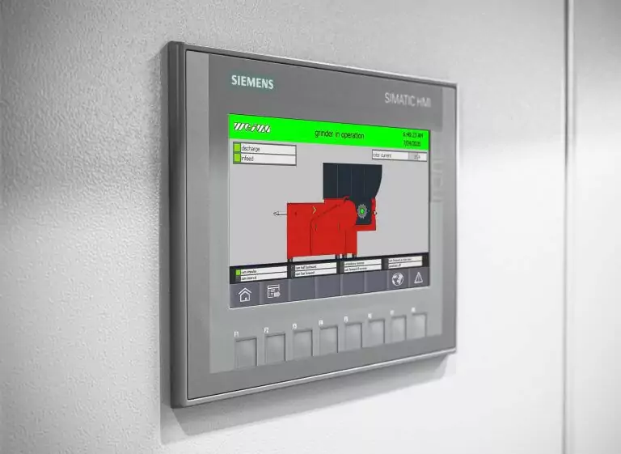

01
Flexible control for changing material flows
WEIMA only requires one control panel to precisely control one or more machines including the conveyor system. The built-in Siemens PLC control is optimally adapted to the shredding process. Various slide controls and rotor settings can be conveniently adjusted to the desired application. All control cabinets are designed in-house and built in our German production facilities.
